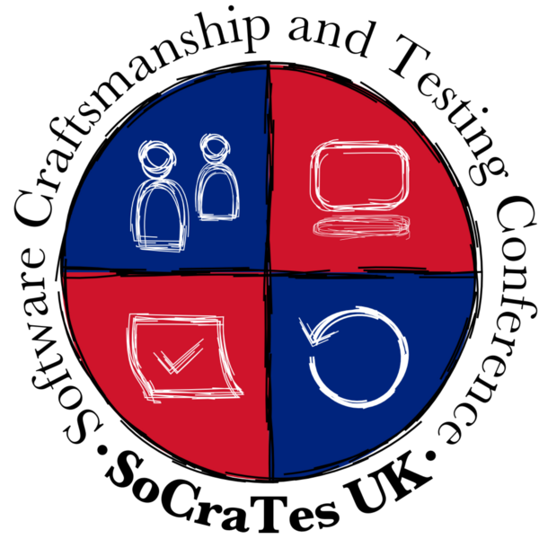
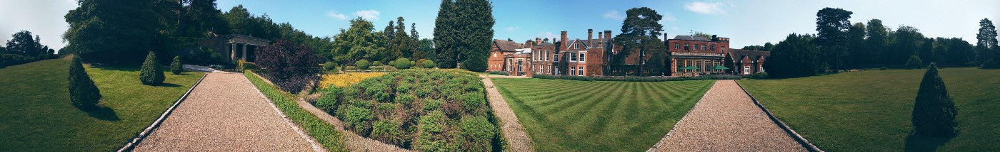
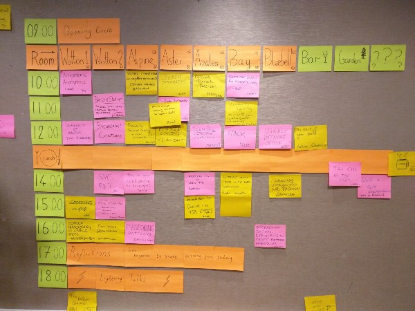

A Community of Professionals - SoCraTes UK

A couple of weeks ago I participated for the first time to a SoCraTes event, one of the Software Craftsmanship international gatherings. SoCraTes (Software Craftsmanship and Testing) is an self-organized conference where the people from the international Software Craftsmanship Community meet and spend 3 days organizing themselves activities and talks around everything related to software craftsmanship: from the technical to the human aspects of it. There are few events of this kind every year (Italy, France, Germany, Belgium, Switzerland, Romania, Finland, Canaries) and I participated to the one in UK.
Location
The location was in Dorking, not far from Gatwick airport. A stunning place! 
Organization — The Open Space
It’s a self-organizing conference because the agenda is created every day by the participants through an Open Space. These were the market places of the two days (the third and last day was dedicated more to relax, chat and walk until people left).


Personal experience
It’s been maybe one of the most stimulating experiences I’ve ever participated to.Through the sessions in the event I really understood the meaning of Software Craftsmanship. I attended technical sessions about refactoring legacy code, TDD and functional programming, as well as other sessions related more to the human aspects of software development like Agile, technical coaching, Community of Practice, communication techniques and interesting comparisons between sport and development.
Differently from a traditional conference, in the SoCraTes events the session are fully interactive and once they start they may also never really end: if people are interested they continue to work on it during the evening and the other days. The sessions organized during the event may also continue after the event itself, so starting cool open source projects that the entire community will one day benefit from. And it will happen very often, as far as I understood. And it’s so cool.
The Software Craftsmanship international community is really awesome: friendly, open and welcoming people who meet in these events to share their passion, to discuss and challenge themselves and to help others to learn how to craft their careers and their skills.
What I learned
The biggest lesson for me that I learned from SoCraTes UK is to realize that software is about people and that too often our industry forgets about it.It’s not that I’ve never thought about empathy, diversity, inclusion and all these stuff, but meeting with a community of passionate people who put these things before the technicalities of software development (when they could fully do it considered their high technical skills) made me realize that maybe I’ve never put the right amount of focus on them.
Software Craftsmanship is care about our industry and this includes everything, from the techniques it is based on to the people who work in it.
It’s been my first SoCraTes event ever, but I will surely participate to the other ones as often as I can. The one in France is not so far from my house so I will surely go there!
…
If you want to get a glimpse of what SoCraTes UK was, register to the Software Craftsmanship Newsletter that I created: the next issue will be fully dedicated to this events.